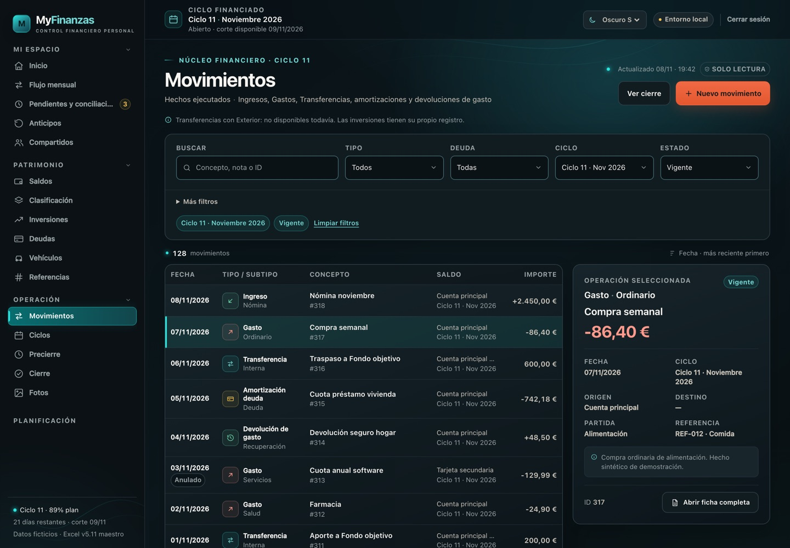
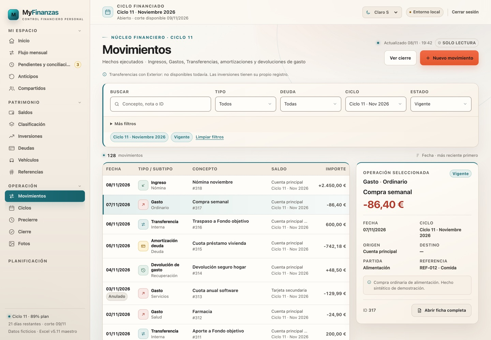

MyFinanzas · Colección visual
Movimientos en los seis temas
La misma pantalla operativa, tres referencias vigentes y tres candidatos.
Dark-s no se ha modificado. Light y Hybrid finales incluyen el detalle claro corregido. Los candidatos son prototipos aislados.
Temas actuales
Dark-s · MovimientosReferencia

Light-s final · MovimientosActual

Hybrid-s final · MovimientosActual

Candidatos visuales
Graphite Lime · MovimientosCandidato 4

Color Finance · MovimientosCandidato 5

Pastel Editorial · MovimientosCandidato 6

Diferenciación
Dark es tecnológico; Light, papel editorial; Hybrid, navegación oscura con workspace cálido. Graphite es grafito/lima; Color Finance es lavanda/amarillo/salvia; Pastel es tinta y editorial.
Operación
Los seis comparten filtros, tabla, selección, detalle y paginación. No se han añadido métricas ni acciones nuevas.
Límite
Graphite y Color tienen móvil; Pastel solo escritorio. No hay integración, merge ni despliegue.
Comparativa de dirección visual. No es una auditoría WCAG completa. Datos sintéticos.